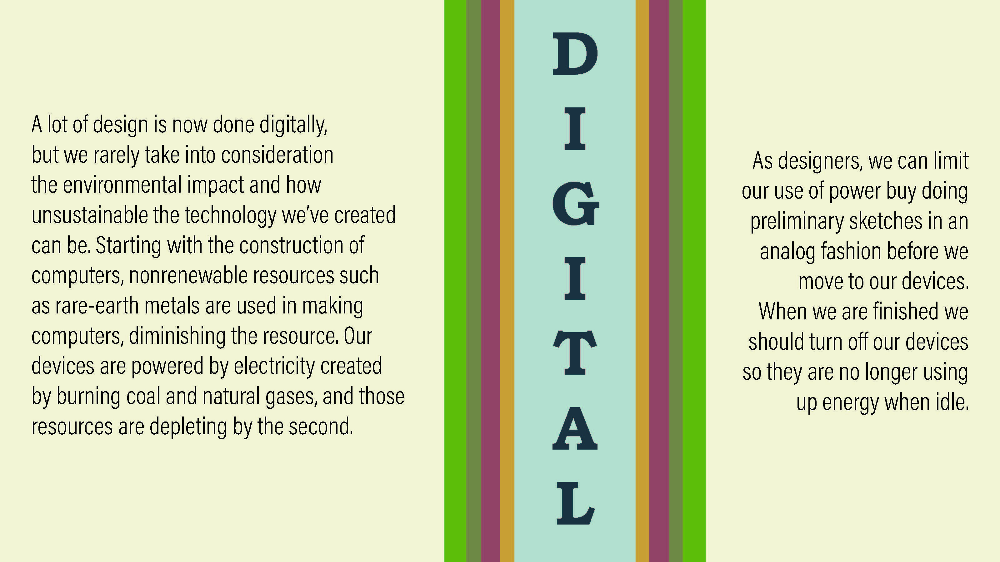
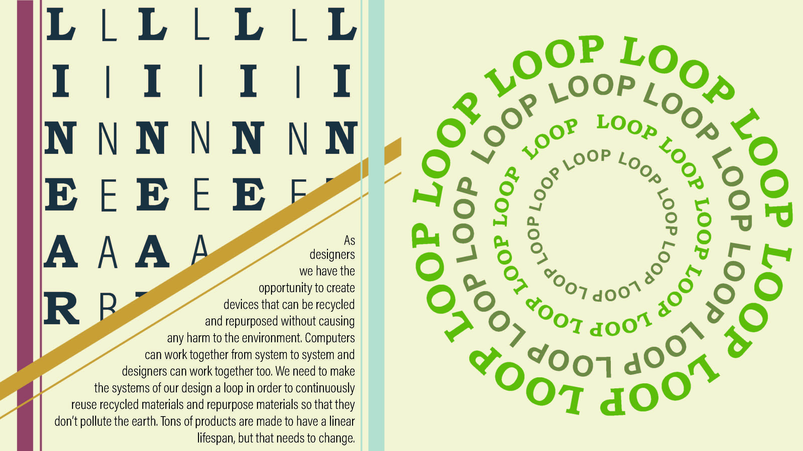
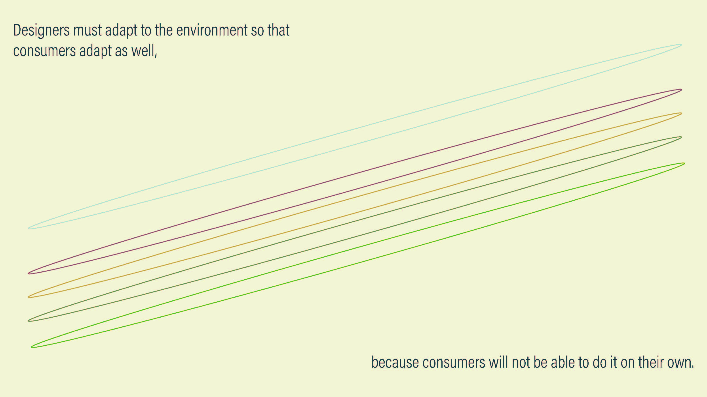

Amanda Grate



This piece is part of a greater collaborative piece from a graphic design class in the spring of 2020. My other group members and I focused on being conscious of what we create and how we create as graphic desginers. Each person had a section to research and design. My section focused on the impact of working digitally. I focus on the environemntal impact of our devices and base the idea on the linear path we are on and how it should be changed to a looping or circular process in order to save out planet. We should be creating things that can be reused or made into other things instead of being thrown away. Conscious Creation was created to help open people's eyes to the damge we're doing to the earth.
blah